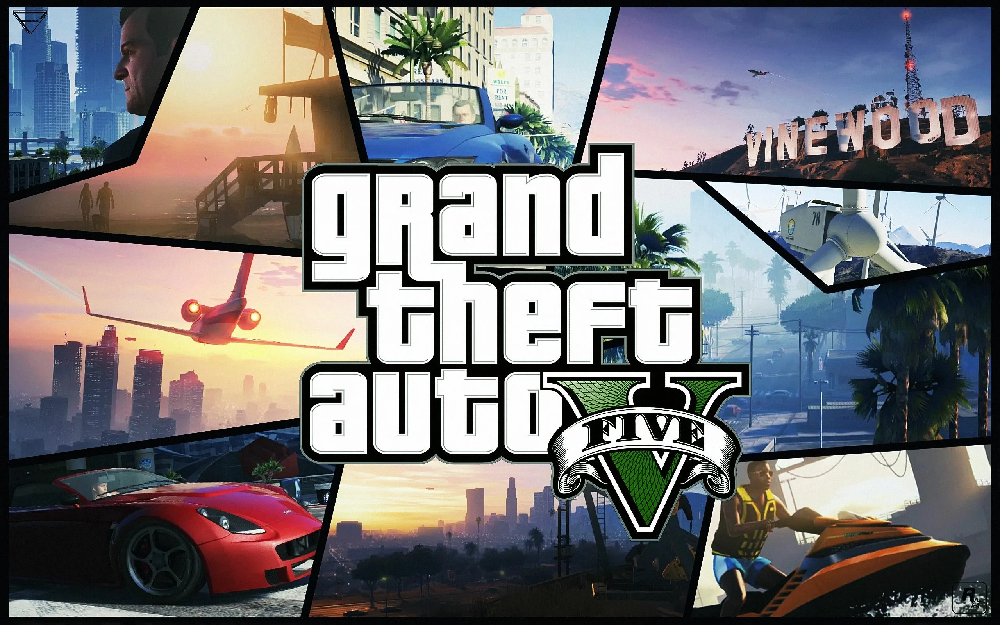
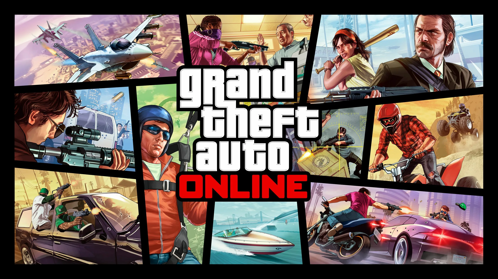
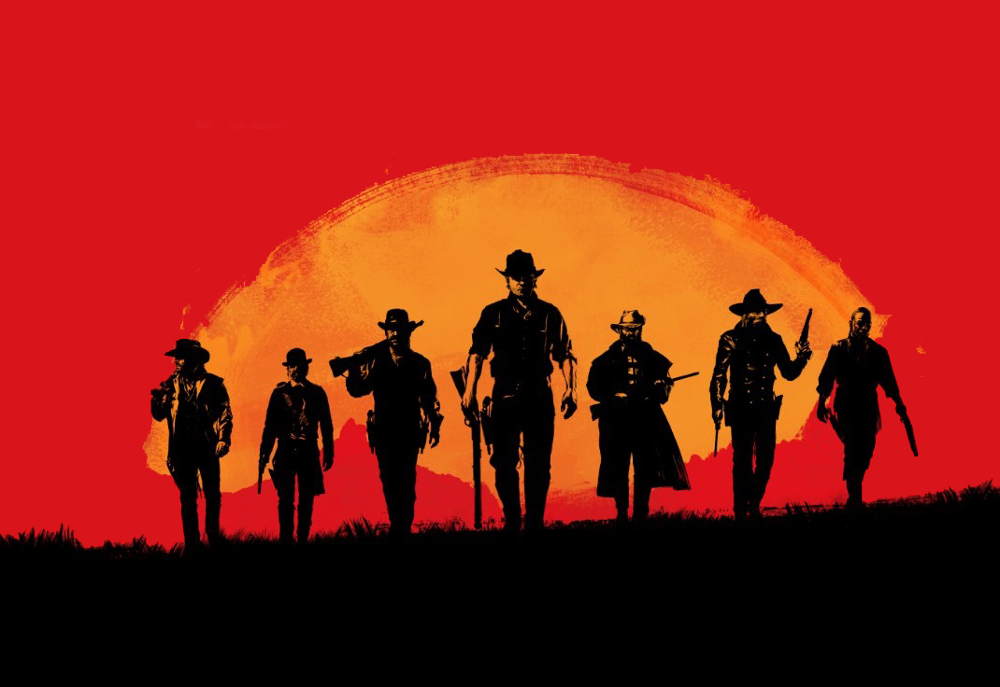
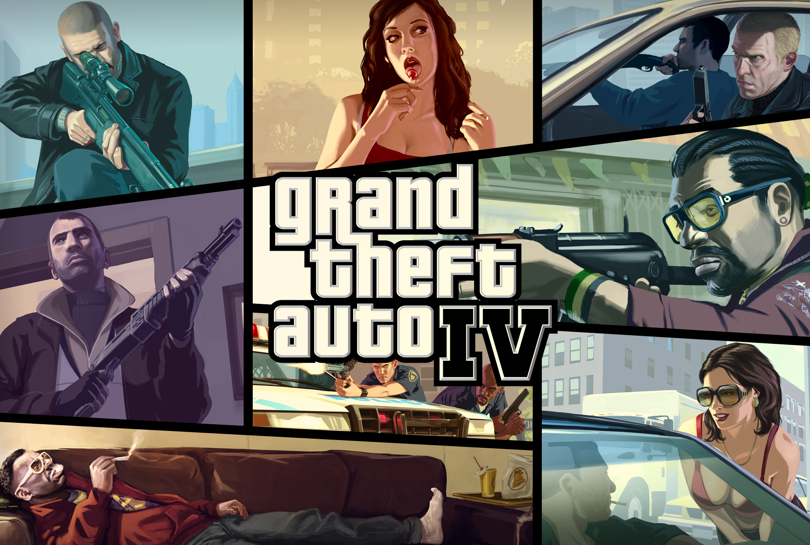
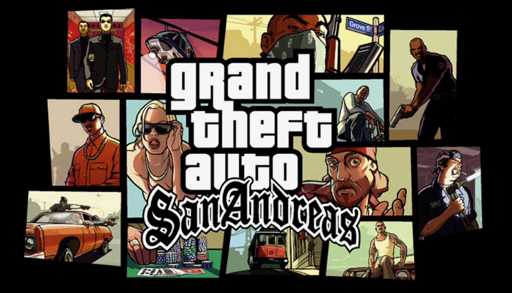

History
On March 12, 1998, Take-Two Interactive announced its acquisition of the assets of dormant British video game publisher BMG Interactive from BMG Entertainment (a unit of Bertelsmann). In exchange, Take-Two was to issue 1.85 million shares (around 16%) of its common stock to BMG Entertainment. Through this acquisition, Take-Two obtained several of BMG Interactive's former intellectual properties, including DMA Design's Grand Theft Auto and Space Station Silicon Valley. The deal was announced to have closed on March 25. Three BMG Interactive executives—Dan Houser, Sam Houser, and Jamie King—as well as Gary Foreman of BMG Interactive and Terry Donovan of BMG Entertainment's Arista Records record label, subsequently moved to New York City to work for Take-Two Interactive. In a restructuring announced that April, Sam Houser was appointed as Take-Two's "vice president of worldwide product development". In December 1998, the Houser brothers, Donovan and King established Rockstar Games as the "high-end" publishing label of Take-Two. The formation was formally announced on January 22, 1999.
In January 2007, Take-Two announced that Donovan, until then managing director for Rockstar Games, had left the company following a four-month leave of absence. He was succeeded by Gary Dale, who became chief operating officer. Dale previously worked with the Houser brothers and King at BMG Interactive, but left the company when it was acquired by Take-Two Interactive, and joined Capcom's European operations as managing director in 2003.
As of February 2014, Rockstar Games titles have shipped more than 250 million copies, the largest franchise being the Grand Theft Auto series, which alone has shipments of at least 250 million as of November 2016. Grand Theft Auto V shipped the highest number of units within the series' and the company's history, with over 170 million copies, making it the second best-selling video game of all time.
At the 10th British Academy Games Awards in March 2014, Rockstar Games was honored with the BAFTA Academy Fellowship Award for "creating intricately layered interactive worlds that have kept the company at the forefront of the gaming industry for over a decade, both critically and commercially". Jennifer Kolbe, who started at the front desk of Take-Two, acts as Rockstar Games' head of publishing and oversees all development studios. Simon Ramsey is the company's head of PR and communications.
In May 2019, Rockstar Games announced that they were acquiring Dhruva Interactive from Starbreeze Studios for $7.9 million, with the sale being finalized later that month and the Dhruva team merged into Rockstar India.
In September 2019, Rockstar Games announced that they had released their own game launcher, a digital distribution, digital rights management, multiplayer and communications service. After having taken an extended break following the release of Red Dead Redemption 2 in early 2019, Dan Houser left Rockstar Games on March 11, 2020.
The company acquired the Scottish studio Ruffian Games in October 2020, rebranding the studio as Rockstar Dundee.
In September 2022, Rockstar was the target of a data breach in which 90 videos from the development of Grand Theft Auto VI were leaked. Rockstar described the leak as a "network intrusion", and noted that it was "extremely disappointed" by the manner in which the game was first demonstrated, but that it did not anticipate long-term effects on development.
In August 2023, Rockstar acquired Cfx.re (CitizenFX), the team behind the modding platforms FiveM and RedM for Grand Theft Auto V and Red Dead Redemption 2 respectively. Michael Unsworth, vice president of writing, departed the company in 2023 after sixteen years.
Products
Red Dead Redemption 2
Grand Theft Auto 5
Grand Theft Auto Online
Red Dead Redemption
Grand Theft Auto 4
Grand Theft Auto San Andreas
Finances
Revenue:63 000 000 $
Net worth:22 750 000 000 $